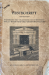

≡
World of Yesterday
Individuals
Surnames
Places
Sources
Media
Thumbnails

Festschrift: Anlässlich der Vollendung des Ceremonien-Halle-Baues und der Friedhofsanlagen (Holič)
Gramps ID
S0825
Publication information
Holič, 14 September 1930
Media
Cover of Holič cemetery Festschrift
References
Josef Winterstern, derzeitiger Obergabaj seit 14 April 1907
[O3157]
Baucomitée, Holitsch
[O3160]
Der derzeitige Vorstand der Chevra Kadischa, Holitsch
[O3158]